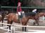
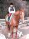
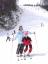
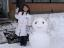

2007年4月15日 18時51分撮影
ちょっと早いお誕生日会をしました。＜由起子の大好きな「ぶんさん」で＞
おじいちゃん：81歳、おばあちゃん：75歳、、、いつまでも元気でね！
2007年3月28日 10時40分撮影
ビギナーコース７・８鞍。。。今日のお馬チャンは「グレコ」です。
2007年2月25日 9時36分撮影
３回目の体験乗馬･･･ルーラとの息もピッタリになりました。
今日はお天気も良かったので、屋外はとっても気持ちよかったね。
2007年2月11日 12時25分撮影
いちおう後ろのコースは上級者コースなのです。
由起子も４回ほど滑りました。なかなか上手になったよね！2007年1月28日 16時11分撮影
家族３人で乗馬体験。由起子はこのルーラちゃんが大好きになりました。
何回も来たい、また乗りたい、もっと早くに来ようよう、、、
由起子は乗馬がとっても気に入ったようです。2007年1月26日 13時58分撮影
腰痛のママがハラハラした参観日。なんとなーくいつもの由起子
じゃない感じ。ちょっと不安気な表情です。しっかりせんかーい!!2007年1月20日 17時04分撮影
カニカニツアーだぞ！ ここ民宿かどやさんへは７回目の訪問です。
今回は、両実家のじいちゃん＆ばぁちゃんをご招待しました。
2007年1月7日 14時02分撮影
帰りたくても、、、帰れない、、、。足止めを食ったサホロで。
雪も時間も存分にあるから、大きな雪だるまを作りました。
誰かがクッキーで目を付けてくれたのです。。。可愛いでしょ！2007年1月6日 16時33分撮影
クラブメッド・サホロで初体験のスケート。一杯こけました。
GOのヒロさん、、、お世話になりありがとうです。2007年1月2日 12時58分撮影
新年あけましておめどとう・・・なのだぁ～、イェーイ！
年明け早々、元気一杯の由起子です。森本さんちで。